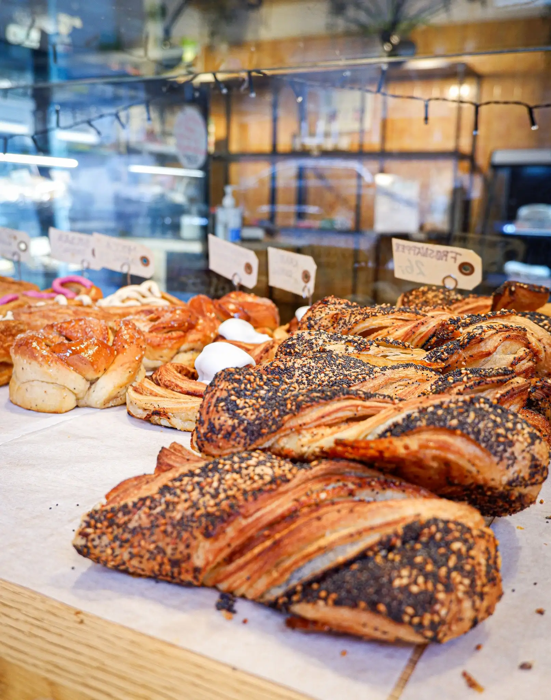
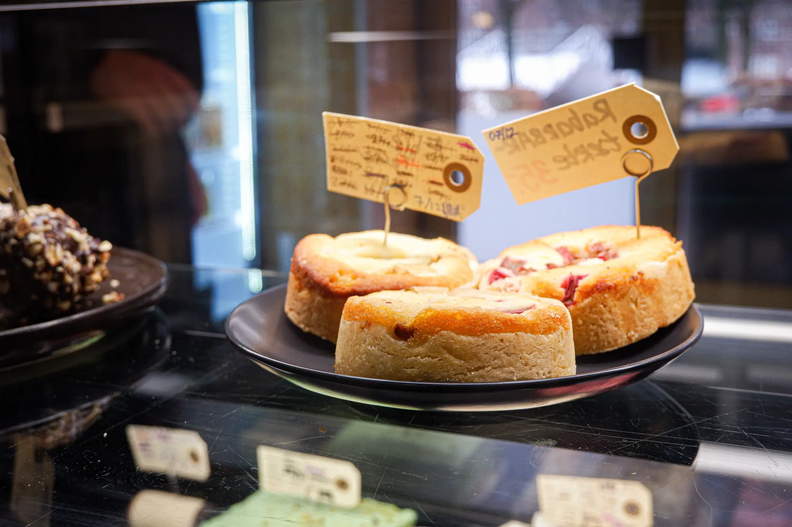
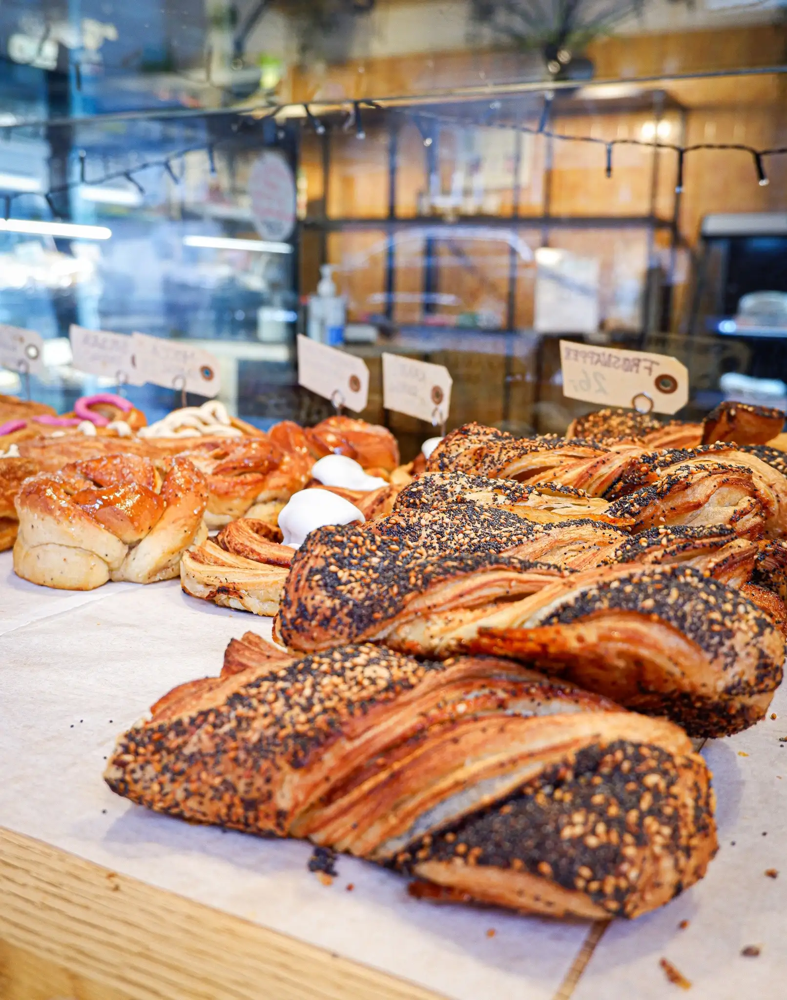
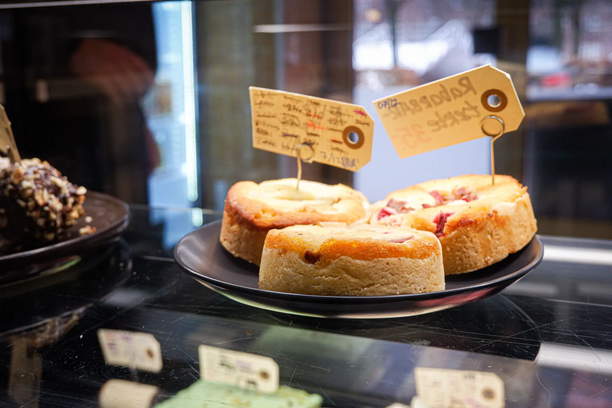

Videosite
I Tema 5 skulle vi først individuelt lave et videosite, som skulle indholde en video vi 2 og 2
har
produceret omkring en person der har en passion.
Sophie og jeg gik sammen om en video om
hende og hendes passion for hudpleje produkter.
Vi skulle filme med mikrofon, hvor vi
derefter skulle redigere videoen i Premiere Pro, samt redigere lyden i Audition. Videoen kan ses
her
til højre.
Tema 5 havde generelt fokus på at skabe indhold til hjemmesider. Derfor udover at skabe en video,
var
det også vigtigt at vi skabte billeder - både i højformat og bredformat.
Det primære
projekt
var at lave et videosite, som skulle minde om en filmplakat.. Jeg valgte derfor at indkorporere
videoen, samt billeder og sætte dem op i grids. Derudover skrev jeg lidt fangende tekst, samt en
passende overskift.
Siden skulle afleveres i github som er et webbaseret lager af
versionshistorik. Dette kan bruges ved hjælp af git, som holder styr på ens ændringer undervejs,
og
som samtidig også gør at flere kan ændre i samme kode på én gang. Det er et vigtigt program at
bruge, da det giver et bedre overblik og man kan derved finde ro i at intet kan gå helt galt.
Virksomhedssite - Redesign
I Tema 5 var vores store opgave dog at lave et redesign at en eksisterende virksomheds
hjemmeside.
Ved hjælp af “The Quick and Dirty method” fandt vi sammen i grupper, hvor folk havde forskellige
styrker. Vi lærte at arbejde ud fra SCRUM-metoden som en arbejdsprocess der indebære et
Trello-board og daglige SCRUM møder.
Vi fandt frem til et lokalt bageri med en hjemmeside der trængte til en opdatering. Lidt
eksempler fra siden kan ses her.

Research og design
Fra tidligere temaer fandt vi alle ud af vigtigheden af at lave sit research og forarbejde.
Derfor gik vi igang med at lave desk research på forskellige andre bageriers sider, for at finde
inspiration.
Vi kunne konkludere at der var flere ting, der gik igen, som vi ønskede at
have med. Såsom at fremhæve værdier og også at have en kontakt side.
Samtidig gik vi
igang med at lave et moodboard for at sætte stemningen for siden.
Vi kom frem til en færdig wireframe som bestod af 5 sider. Herunder bl.a. en “Kontakt” side,
“Udvalg” side og “Om os” side.
Under kontakt siden ønskede vi at have en kontakt
formular og derudover var vores vision at få sat siden op i så mange grids som muligt, for at få
et responsivt og fleksibelt design.
Vi ønskede at have wireframen færdig hurtigst
muligt, så vi havde noget klar til at vi skulle ud og besøge bageriet og skabe indhold til
siden.

Vi fik til opgave at lave et interview, filme 2 videoer og tage billeder. Den ene video skulle
bestå af interviewet samt b-roll clips og den anden video var primært b-rolls.
Det var
vigtigt for os at filme interviewet med stillestående kamera og i normalperspektiv, mens b-rolls
var med håndholdt kamera. Det skabte iøjenfaldende kontrast. Derudover tænkte vi over lyset og
det var vigtigt for os at det blev filmet i naturligt dagslys.

 



Vi ville gerne have en enkelt font som heading, samt inkorporere farver fra deres tidligere
hjemmeside og fra deres fysiske butik.
Vores vigtigste indsigter fra interviewet, var at
de ønskede at have en tæt relation med kunder og derfor ønskede de ikke at der skulle være nogle
kontaktinformationer eller kontaktformular. Kunderne skulle alle henvises til at komme forbi
butikken.
Vi lavede derfor småjusteringer i prototypen såsom at ændre kontakt siden til
“Besøg os” og fjerne kontaktformularen.
Kodning
Fra tidligere erfarring har vi også lært vigtigheden af et sitemap og layoutdiagrammer af de
forskellige sider, inden vi skulle til at kode.
Vi udviklede derfor begge dele, og især
layoutdiagrammerne kunne hjælpe os i vores kodning.
I vores kodning havde vi en del udfordringer med at få vores burger-menu til at virke. Desværre
havde jeg selv haft udfordringer med det i tidligere temaer og aldrig haft succes. Vi fik dog
heldigvis kommet i mål med den, og det vil derfor hjælpe en hel del på brugeroplevelsen. Det var
vigtigt for os at have den på plads, da vi tænkte at de færreste ville gå på en computer for at
finde bagerier.
Derudover lavede vi en scroll function på udvalg siden, hvor man kan
scrolle produkterne til venstre. Dette virker dog kun på desktop.
Test
Som en del af processen, skulle vi lave nogle forskellige tests. Den første test var en BERT
test, som står for “Bipolær Emotionel Respons Test”.
Den handler om at havde 2 poler med
følelsesladede tillægsord. Vi spørger derfor brugeren, hvilke tillægsord de hælder mest til, når
de ser siden.
Billedet til højre er svarene på testen fra den gamle side, hvor at højre
side er negative svar.
For at se om der er sket en forbedring, lavede vi også en BERT test for den nye og redesignede
side.
Vi kan se generelt at svarene er til den positive side, og dermed er der sket en
klar forbedring. Dette kunne vi bruge som en bekræftigelse i at vi har fuldført vores mål og
gjort siden mere brugervenlig og overskuelig.
En anden test vi lavede var lighthouse testen, som jeg også tidligere har brugt i Tema 3.
Det øverste svar er fra den gamle side og de 5 andre er fra vores nye side.
Generelt er det igen fine resultater, men det der dog springer i øjnene er 2 af siderne,
der har en lav performance score.
Vi undersøgte sagen og fandt ud af at det skyldes de videoer der ligger og fylder, og
dermed gør siderne en del langsommere om at loade.
Dette vil vi fremover huske til
fremtidige projekter og undgå en lav score.
Den tredje og sidste test vi brugte var en 5-sekunders test. En test hvor vi på 5 sekunder viser
testpersonen vores hjemmeside, og derefter stiller dem et par spørgsmål, for at finde ud af om
vores hjemmeside med det samme udtrykker det vi ønsker den skal.
Dette er en test som
gør at brugeren slet ikke har tid til at reflektere over små detaljer, eller tænke som en
designer.
Resultaterne var også positive for os, når vi sammenligner dem med den gamle og den nye
side. Generelt kunne vi kun høre at der var sket en forbedring. Jeg vil især fremhæve at vores
side så mere moderne og færdiglavet ud.
Som en efterfølgende reflektion, kunne vi også have lavet en heuristisk test. Her var
det dog en fordel hvis vi havde en ekspert i UX design til at sidde og identificere problemer på
sitet. Vi kunne i samme omgang også lave en tænke-højt test, hvor vi tager noget på
testpersonens observationer.